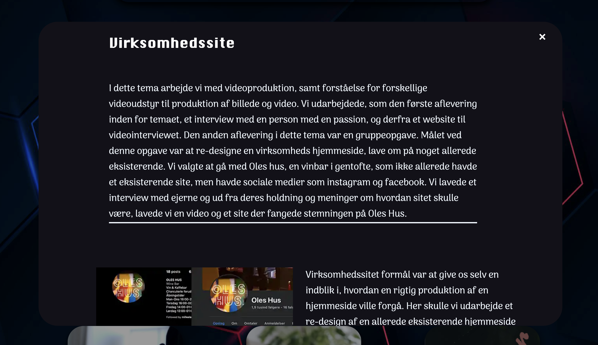

JavaGuitars
Målet var at etablere en stærk online tilstedeværelse for vores
lokale guitarreparationsbutik ved at skabe en brugervenlig
hjemmeside. I projektet var jeg ansvarlig for git-processen,
herunder versionsstyring og samarbejde. Jeg oprettede en
omfattende database med guitarinformation ved at hente
JSON-elementer. Mit fokus var også på global CSS for en ensartet
visuel identitet på hele hjemmesiden. Vi brugte Astro Framework
til projektet, hvilket forstærkede vores evne til at levere en
moderne weboplevelse.
1.sem Portfolio

Under dette 1. semesterprojektet havde jeg muligeheden for at
udvikle en imponerende portfolio-hjemmeside, der skulle
præsentere mit arbejde. Min primære fokus var på CSS, hvor jeg
arbejdede fokuseret for at designe og implementere elementer
samt tilføje visuelt tiltalende animationer. Målet var ikke kun
at organisere projekterne, men også at skabe en hjemmeside med
et flot CSS-design og smidige animationer. Dette enmandsprojekt
styrkede mine færdigheder inden for CSS og gav mig værdifuld
erfaring i selvstændig projektledelse.
Oles Hus
I projektet, hvor målet var at forbedre Oles Hus' online
tilstedeværelse, blev der lagt vægt på at præsentere
virksomheden på en engagerende måde for at styrke deres image.
Vi arbejdede med flere aspekter, herunder udviklingen af en ny
hjemmeside, produktionen af en video og skabelsen af visuelt
imponerende billeder. Min rolle var afgørende i denne proces, da
jeg havde ansvaret for content creation samt stå for
kodningsprocessen af hjemmesiden. Jeg anvendte SCRUM-metoden som
et værktøj til at effektivisere arbejdsprocessen og sikre, at vi
nåede vores mål inden for de fastsatte rammer. Gennem
samarbejdet lykkedes det os at skabe en hjemmeside, der ikke kun
teknisk fungerede optimalt, men også afspejlede Oles Hus'
identitet på en visuelt tiltalende måde. Den tilhørende video og
billedmateriale blev nøje designet for at sætte Oles Hus i det
bedst mulige lys og bidrage til en stærkere online
tilstedeværelse. Resultatet af vores indsats var ikke blot en
opdateret online platform for Oles Hus, men også en styrkelse af
deres brand og image, hvilket var det overordnede formål med
projektet.